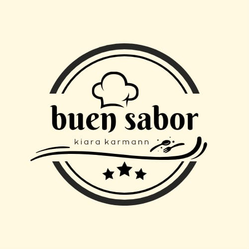

Buen Sabor
Buenas, soy Kiara Karmann y les vengo a presentar mi emprendimiento. Me voy a concentrar en la producción de alfajores de maicena y chocolate rellenos de dulce de leche, teniendo presente el objetivo de lograr la satisfacción de quien está leyendo esto y todos los que quieran probar estos alfajores. Es todo 100% casero y elaborado con medidas de higiene de manera tal que no afecte la salud ni el cuidado de nadie. Me van a poder encontrar los días 21 y 23 de junio, como todos los demás emprendimientos que se presenten. Muchas gracias.